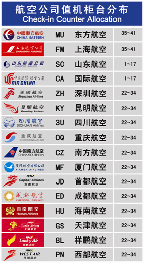

- 如何办理值机手续办理
-
请根据您所选乘的航空公司，在出发大厅入口处的航班信息显示屏上查询您所乘坐航班相应的值机柜台，然后到相应的值机柜台办理乘机手续。
★无行李托运的旅客还可以使用航站楼内的自助值机设备自助办理值机。

- 乘机的有效证件
-
按照中华人民共和国公安部、民航总局有关规定，乘机有效证件分为四大类：居民身份证件、军人类证件、护照类证件和其它可以乘机的有效证件。
一、居民身份证件 国内在陆地区的居民身份证和临时居民身份证。
二、军人类证件 军官证、武警警官证、士兵证、军队文职干部证、军队离（退）休干部证、军队职工证、学员证。
三、护照类证件 护照、港澳同胞回乡证、港澳居民来往内地通行证、中华人民共和国往来港澳通行证、台湾居民来往大陆通行证、大陆居民往来台湾通行证、外国人居留证、外国人出入境证、外交官证、领事官证、海员证等。
四、其它可以乘机的有效证件 1.本届全国人大代表证、全国政协委员证； 2.出席全国或省、自治区、直辖市的党代会、人代会、政协会、工、青妇代表会和劳模会的代 表，凭所属县、团级（含） 以上党政军主管部门出具的临时身份征明；3.旅客的居民身份证所在户籍所在地以外被盗或丢失的，凭发案、报失地分公安机关出具的临时身份证明； 4.年龄已高的老人（按法定退休年龄掌握），凭接待单位、本人原工作单位或子女、配偶工作单位（必须是县团级[含]以上间位）出具的临时身份证明；5.十六岁以下未成年人凭学生证、户口簿或者所在地公安机关出具的身份证明等。
- 随身携带行李的限制规定
-
⑴、乘坐国内航班：旅客的手提行李总重量不要超过5公斤，体积每件行李不超过20×40×55厘米（根据各航空公司要求不同可能有所不同）。值机柜台现场有供旅客测试手提行李大小的行李筐，如果旅客的行李可以放入该标准筐，则该件行李可以随身携带，否则需要托运。
⑵、乘坐国际航班：通常情况，手提行李总重量不要超过5公斤，每件行李体积不超过20×40×55厘米（三边之和不超过115厘米）。（部分航空公司有特殊重量限制规定，请旅客留意机票上的提示，或向航空公司咨询。）
- 托运行李的相关规定
-
⑴乘坐国内航线：持成人或儿童客票的头等舱旅客为40公斤，公务舱旅客为30公斤，经济舱旅客为20公斤。持婴儿票的旅客，承运人规定不同，视选乘航空公司而定。
⑵乘坐国际航线：经济舱旅客的免费托运行李限额为20公斤，经济舱持学生护照的旅客，可以免费托运的行李限额为30公斤；公务舱免费托运行李限额为30公斤；头等舱免费托运行李限额为40公斤。但当目的地为美洲时，其托运行李可以为两件，每件不超过23公斤，单件行李三边长度和不超过158厘米。当超过时，旅客需要支付逾重行李费。（部分航空公司有特殊重量限制规定，请旅客留意机票上的提示，或向航空公司咨询）
★请您到达机场后，参看济南国际机场航站楼旅客服务指南，到具体的值机柜台办理行李托运。
★不可作为托运行李运输物品有：重要文件和资料、证券、货币、汇票、珠宝、贵重金属及其制品、古玩字画、易碎易损坏物品、易腐物品、样品、旅行证件、贵重物品等。（具体请向航空公司问询）
★请您在托运行李前注意清除行李箱/袋上的废旧行李条及有条码的标签，以确保您的行李正确运至目的地
- 乘机的有效证件
-
依据中华人民共和国公安部、民航总局有关规定，乘机有效证件分为四大类：居民身份证件、军人类证件、护照类证件和其它可以乘机的有效证件。
一、居民身份证件 国内在陆地区的居民身份证和临时居民身份证。
二、军人类证件 军官证、武警警官证、士兵证、军队文职干部证、军队离（退） 休干部证、军队职工证、学员证。
三、护照类证件 护照、港澳同胞回乡证、港澳居民来往内地通行证、中华人民共和国往来港澳通行证、台湾居民来往大陆通行证、大陆居民往来台湾通行证、外国人居留证、外国人出入境证、外交官证、领事官证、海员证等。
四、其它可以乘机的有效证件
1.本届全国人大代表证、全国政协委员证；
2.出席全国或省、自治区、直辖市的党代会、人代会、政协会、工、青妇代表会和劳模会的代表，凭所属县、团级（含）以上党政军主管部门出具的临时身份征明；
3.旅客的居民身份证所在户籍所在地以外被盗或丢失的，凭发案、报失地公安机关出具的临时身份证明；
4.年龄已高的老人（按法定退休年龄掌握），凭接待单位、本人原工作单位或子女、配偶工作单位（必须是县团级[含]以上间位）出具的临时身份证明；
5.十六岁以下未成年人凭户口簿或者所在地公安机关出具的身份证明等等。
- 民航安全技术检查的概念
-
民航安全技术检查，是指在民用机场实施的为防止劫（炸）飞机和其他危害航空安全事件的发生，保障旅客、机组人员和飞机安全所采取的一种强制性的技术性检查。
- 民航安全技术检查的性质
-
民航安全技术检查，是民航空防安全保卫工作的重要组成部分，是国务院民用航空主管部门授权的专业安检队伍，为保障航空安全，依照国家法律法规对乘坐民航班机的中、外籍旅客及物品以及航空货物、邮件进行公开的安全技术检查，防范劫持、爆炸民航班机和其他危害航空安全的行为，保障国家和旅客生命财产的安全，具有强制性和专业技术性。
- 安检相关规定
-
禁止旅客随身携带或托运的物品
依据《中国民用航空安全检查规则》附件一《禁止旅客随身携带或者托运的物品》如下，共九大类：
一、枪支、军用或警用械具类（含主要零部件）物品；
二、爆炸物品类；
三、管制刀具；
四、易燃、易爆物品；
五、氰化物、剧毒农药等剧毒物品；
六、腐蚀性物品：硫酸、盐酸、硝酸、有液蓄电池、氢氧化钠、氢氧化钾等腐蚀性物品；
七、放射性物品，放射性同位素等放射性物品；
八、其他危害飞行安全的物品，如可能干扰飞机上各种仪表正常工作的强磁化物、有强烈刺激性气味的物品等；
九、国家法律法规规定的其他禁止携带、运输的物品。
禁止旅客随身携带但可以作为行李托运的物品
依据《中国民用航空安全检查规则》附件二《禁止旅客随身携带但可以作为行李托运的物品》如下：依据《中国民用航空安全检查规则》附件二《禁止旅客随身携带但可以作为行李托运的物品》如下：
可以用于危害航空安全的菜刀、大剪刀、大水果刀、剃刀等生活用刀，手术刀、屠宰刀、雕刻刀等专业刀具，文艺单位表演用的刀、矛、剑、戟等，以及斧、凿、锤、锥、加重或有尖钉的手杖、铁头登山杖和其他可用来危害航空安全的锐器、钝器。禁止旅客随身携带液态物品
依据《关于禁止旅客随身携带液态物品乘坐国内航班的公告》〔2008〕2号和〔2008〕1083号如下：
一、乘坐国内航班的旅客一律禁止随身携带液态物品（包括液体、凝胶、气溶胶等形态的液态物品），但可办理交运，其包装应符合民航运输有关规定。
二、旅客携带少量旅行自用的化妆品，但不包括洗发水、淋浴液。容器容积超过100毫升，无论容器中剩余多少，不许携带；旅客携带适量的牙膏及剃须膏，每种限带一件，每件容积不超过100克（毫升）。
三、来自境外需在中国境内机场转乘国内航班的旅客，其携带入境的免税液态物品应置于袋体完好无损且封口的透明塑料袋内，并须出示购物凭证，经安全检查确认无疑后方可携带。
四、酒类物品不得随身携带，但可作为托运行李交运。酒精度70度以下（不含70度）的酒类物品，交运总量不得超过2瓶（容积总量不超过1000毫升）；酒精度70度（含70度）以上的酒类物品不得办理交运。酒类物品的包装应符合民航运输有关规定。
五、糖尿病患者或其他患者携带必需的液态药品（凭医生处方或者医院证明，在药店购买的除外），经安全检查确认无疑后，可适量随身携带。
六、有婴儿随行的旅客，购票时可向航空公司申请，由航空公司在机上免费提供液态乳制品。
七、旅客因违反上述规定造成误机等后果，责任自负。禁止旅客随身携带打火机火柴
依据《关于禁止旅客随身携带打火机火柴乘坐民航飞机的公告》民航公告〔2008〕3号如下：根据航空安全需要，禁止旅客随身携带打火机、火柴乘坐民航飞机，提醒广大旅客自行处理好相关物品，由此发生的延误和误机，后果自负。
特别提示：打火机、火柴既不能随身携带，且不能办理托运。
- 锂电池的乘机运输规定
-
依据民航明传电报《关于加强旅客行李中锂电池航空运输安全的通知》〔2011〕1888号如下：
1．旅客携带锂电池小于100Wh（瓦特小时）或2克的：
①可装在手提行李或交运行李的设备中携带。
②备用电池作为自用的，做好绝缘防护后可随身携带。2. 旅客携带锂电池大于100Wh小于160Wh的：
①在设备中，经航空公司批准（批准人签字、盖章），并做好防意外启动措施，可以装在交运行李或手提行李的设备中携带。
②备用电池，经航空公司批准并做好防意外启动措施，仅能放在手提行李中携带，只能携带两块。
3. 旅客携带锂电池大于等于160Wh的：严禁携带。
- 行李安全检查规定
-
随身携带物品：随身携带物品的重量，每位旅客以5公斤为限。持头等舱客票的旅客，每人可随身携带两件物品；持公物舱或经济舱客票的旅客，每人只能随身携带一件物品。每件随身携带物品的体积均不得超过20×40×55厘米。超过上述重量、件数或体积限制，应作为托运行李托运。
不准作为行李运输的物品：旅客不得在托运行李或随身携带物品内夹带易燃、爆炸、腐蚀、有毒、放射性物品，可聚合物质，磁性物质、打火机火柴及其危险物品。旅客乘坐飞机不得携带武器、管制刀具、利器和凶器。旅客不得在托运行李中夹带个人自用的内含锂电池的电子消费品设备的备用电池（如：手表、计算器、照相机、手机、手提电脑、便携式摄像机等）。
不准在托运物品中夹带的物品：重要文件和资料、外交信袋、证券、货币、汇票、贵重物品、易碎易腐物品，以及其它需要专人照管的物品，不得夹入行李内托运。